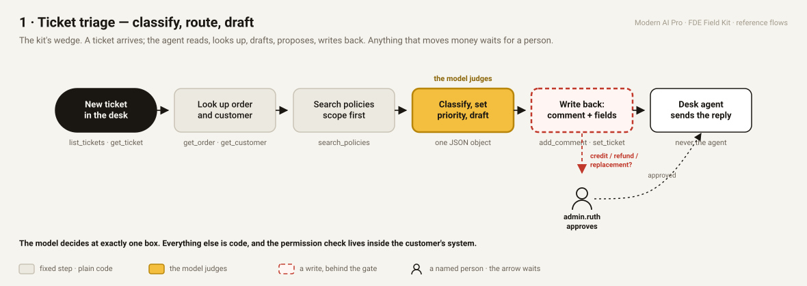
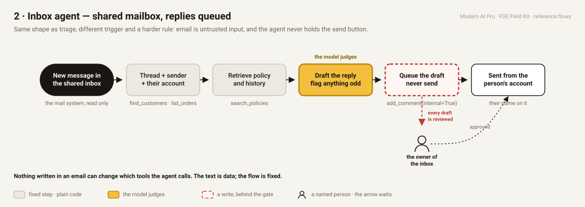
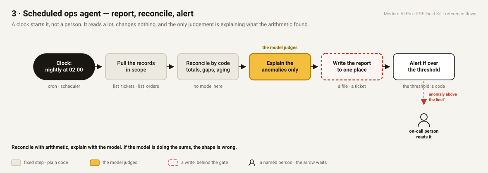
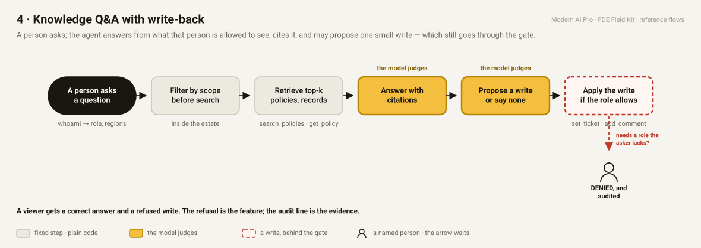
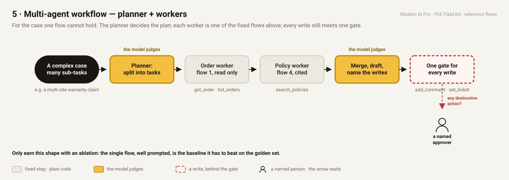

The five reference flows
Pick a shape, not a blank page. Grey = plain code · amber = the model judges · red edge = a write behind the gate · the person = a named human the arrow waits for. The text version with the 9:30 exercise is in docs/FLOWS.md.




